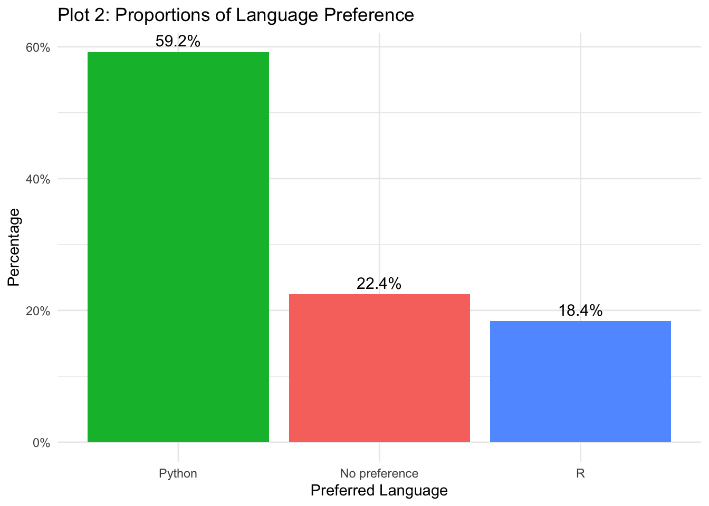
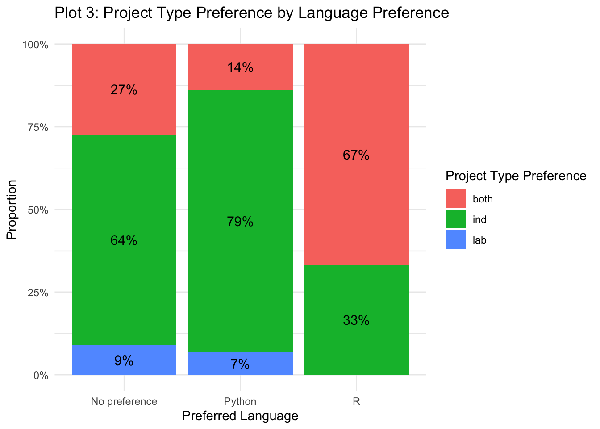
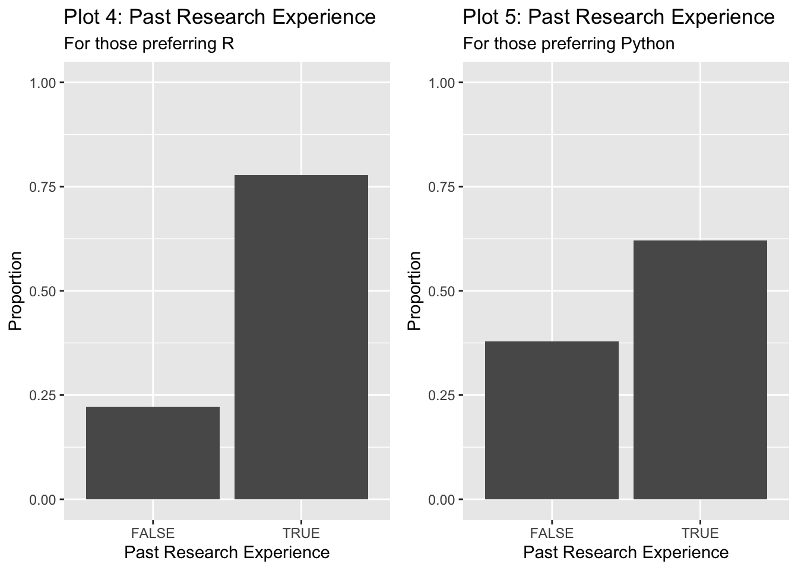

Analysis of Class Surveys
PSTAT 197A Module 0
Executive summary
Write a one-paragraph abstract summarizing what you did and your findings. It need not be comprehensive; try to highlight the most important or interesting outcomes.
Data description
Source: Survey distributed to all students offered enrollment in PSTAT197A, Fall 2025.
Sample Size: ùëõ = 60 responses.
Sampling: No random selection. Can be considered:
A census of PSTAT197A enrollees, or
A convenience sample of students interested in data science/capstones.
Sample Characteristics:
| Characteristic | Count | Percent |
|---|---|---|
| Class Standing | ||
| Junior | 9 | 15% |
| Senior | 51 | 85% |
| Gender Identity | ||
| Female | 28 | 46.7% |
| Male | 32 | 53.3% |
| Race / Ethnicity | ||
| Asian | 43 | 71.7% |
| Caucasian | 13 | 21.7% |
| Multiracial | 3 | 5% |
| Prefer not to say | 1 | 1.7% |
Consent for sharing:
| Share background | Share project preferences | Count |
|---|---|---|
| Yes | Yes | 49 |
| Yes | No | 2 |
| No | Yes | 3 |
| No | No | 6 |
Measurements Collected:
Self-reported proficiency in programming, math, and statistics:
beg,int,adv.Comfort levels (numeric scale 1–5) in programming (
prog.comf), math (math.comf), statistics (stat.comf).Course history: Counts of courses taken in departments like PSTAT, CS, LING, ECON.
Past research experience, project preferences, and demographic info.
Notes on the dataset:
Personal information, free-text responses, and students who did not consent were removed.
Some variables, like distinctions in research experiences, were simplified for analysis.
Summary Statistics:
| Variable | Mean | Median | Min | Max |
|---|---|---|---|---|
| prog.comf | 3.86 | 4 | 2 | 5 |
| math.comf | 4.04 | 4 | 3 | 5 |
| stat.comf | 4.04 | 4 | 2 | 5 |
Proficiency levels (numeric) roughly align with comfort ratings:
prog: 2.9 (mean)math: 2.78stat: 2.83
Questions of interest
We sought to understand how students’ programming language preferences relate to their academic background, skills, and project interests.In particular, we examined whether language preference aligns with coursework patterns in different departments, students’ domain interests, project type preferences (industry vs. research), class level or standing, and overall academic background. Our analysis addressed the following questions:
How does students’ academic background and preparation relate to their programming language preference?
How do students’ programming language preferences influence their interests and coursework choices?
Does a student’s preferred programming language (R, Python, or no preference) influence their self-reported proficiency and comfort in programming and math?
Findings
Language and Project Preferences
The following chart displays the distribution of students that prefer each programming language in the class. As shown, a majority of students (around 60%) prefer Python, around 22% of students are not partial toward either language, and around 18% of the class prefers R.
The bar chart below illustrates the relationship between students’ project type preferences and their preferred programming language. The figure shows that a majority of those who prefer Python (79%) prefer to work on an industry-sponsored project, whereas a majority of students that prefer R either do not prefer one type of project over another. This may be due to the fact that Python is more prevalent in the industry, so students who prefer Python are more likely to seek industry-sponsored projects rather that research-based projects, which tend to use R.

Language and Coursework
The following chart shows that programming language preference is associated with coursework patterns. Students preferring R have taken more PSTAT courses (5.22 average) compared to Python-preferring students (4.55), showing more PSTAT coursework and experience is correlated with R preference. Conversely, Python-preferring students have completed more CS courses (1.52 vs. 1.11), aligning with Python’s prominence in computer science. ECON and LING courses show less variation across language preferences, suggesting they don’t heavily influence language choice. Overall, the data indicates that students’ language preferences reflect their disciplinary preparation.

Language and Proficiency
The following analyses examine how students’ programming language preference (R, Python, or No preference) relates to their proficiency and comfort in programming and math.
Comfort and Proficiency by Language
We first converted students’ self-reported proficiency levels in programming and math into numeric scores (1 = beginner, 2 = intermediate, 3 = advanced) and combined them with their comfort scores. The table below shows the ANOVA results testing for differences in these scores by language preference:
Df Sum Sq Mean Sq F value Pr(>F)
lang 2 0.14 0.07 0.162 0.850
skill_type 3 121.92 40.64 91.555 <2e-16 ***
lang:skill_type 6 4.26 0.71 1.601 0.149
Residuals 184 81.67 0.44
---
Signif. codes: 0 '***' 0.001 '**' 0.01 '*' 0.05 '.' 0.1 ' ' 1The ANOVA indicates that there is a significant difference between skill types (Programming vs Math, Proficiency vs Comfort), but no significant differences between languages or their interaction with skill type. In other words, students’ comfort and proficiency levels are fairly similar across those preferring R, Python, or having no preference.
Visualization
The boxplot below illustrates the distributions of programming and math comfort and proficiency scores by language preference:

From the plot, we see that median scores are similar across language preferences for both programming and math. Programming proficiency and comfort are slightly higher on average than math scores, consistent with the overall skill distribution in the class. The following chart displays the distribution of students that prefer each programming language in the class. As shown, a majority of students (around 60%) prefer Python, around 22% of students are not partial toward either language, and around 18% of the class prefers R.
Language and Data Science Interests
Next we examine what areas of data science each language preference group is interested in. We start by separating out each of the possible areas through one-hot encoding so we can take a look at some of the patterns of area interest between the language groups.

As we’ve already found, there is an overall preference for Python over R. Those that prefer Python have the most interest in natural language processing and software engineering. Meanwhile those that prefer R appear to be more interested in statistical models and inference, predictive modeling, and image classification. Students with no preference show the most interest in data visualization and spatial statistics/time series.
In the table below, we can also take a look at whether or not there are correlations between the different areas of data science interest. We see for example, that an interest in algorithms is fairly positively correlated with an interest in natural language processing. On the other hand, an interest in algorithms is a little negatively correlated with an interest in deep learning and neural networks. Overall, there are some slight correlations between all the areas of interest, which makes sense as they all fall under a general interest in data science.
| term | area_image | area_dlnn | area_spatial | area_dataeng | area_nlp | area_software | area_vis | area_pred | area_stat | area_database | area_algo |
|---|---|---|---|---|---|---|---|---|---|---|---|
| area_image | NA | 0.1997796 | -0.2173067 | 0.1732674 | 0.2395677 | 0.3531250 | 0.2016716 | 0.0280056 | 0.1406102 | 0.2350080 | 0.1738343 |
| area_dlnn | 0.1997796 | NA | -0.0491473 | 0.0666181 | 0.0525185 | 0.1715374 | -0.0593767 | -0.1211359 | -0.2211629 | -0.0799305 | -0.2401922 |
| area_spatial | -0.2173067 | -0.0491473 | NA | -0.0705978 | -0.1095993 | -0.1980295 | -0.1184448 | 0.2282177 | 0.3333333 | 0.1414214 | 0.0944384 |
| area_dataeng | 0.1732674 | 0.0666181 | -0.0705978 | NA | 0.1485595 | 0.4298988 | 0.1043571 | -0.0025779 | 0.0282391 | 0.4512785 | 0.0820059 |
| area_nlp | 0.2395677 | 0.0525185 | -0.1095993 | 0.1485595 | NA | 0.2828290 | 0.0584166 | 0.0975488 | 0.0821995 | 0.2014959 | 0.5104035 |
| area_software | 0.3531250 | 0.1715374 | -0.1980295 | 0.4298988 | 0.2828290 | NA | 0.2040635 | -0.0135582 | -0.1113916 | 0.3150630 | 0.1735742 |
| area_vis | 0.2016716 | -0.0593767 | -0.1184448 | 0.1043571 | 0.0584166 | 0.2040635 | NA | 0.1016374 | 0.1302893 | 0.1005038 | -0.0268458 |
| area_pred | 0.0280056 | -0.1211359 | 0.2282177 | -0.0025779 | 0.0975488 | -0.0135582 | 0.1016374 | NA | 0.3347193 | 0.1678293 | 0.1875070 |
| area_stat | 0.1406102 | -0.2211629 | 0.3333333 | 0.0282391 | 0.0821995 | -0.1113916 | 0.1302893 | 0.3347193 | NA | 0.1414214 | 0.2597057 |
| area_database | 0.2350080 | -0.0799305 | 0.1414214 | 0.4512785 | 0.2014959 | 0.3150630 | 0.1005038 | 0.1678293 | 0.1414214 | NA | 0.3873127 |
| area_algo | 0.1738343 | -0.2401922 | 0.0944384 | 0.0820059 | 0.5104035 | 0.1735742 | -0.0268458 | 0.1875070 | 0.2597057 | 0.3873127 | NA |
Next, we were interested in seeing if a students’ data science areas of interest could inform their language preferences. Thus we fitted a multinomial regression:
# weights: 39 (24 variable)
initial value 53.832002
iter 10 value 33.429573
iter 20 value 33.013946
iter 30 value 32.996870
iter 40 value 32.996632
final value 32.996629
convergedCall:
multinom(formula = lang ~ ., data = ds_interest_data)
Coefficients:
(Intercept) area_image area_dlnn area_spatial area_dataeng area_nlp
Python -15.564230 -2.3894102 17.2183123 -1.52104 -1.603161 1.970083
R 1.350482 0.6089973 -0.9024187 -1.21474 -0.929882 -0.242841
area_software area_vis area_pred area_stat area_database area_algo
Python 2.2817491 -1.951757 2.2264644 -0.1103564 0.4556526 -0.4727399
R 0.2013241 -1.289626 0.6354393 0.7333119 0.0880477 0.1183021
Std. Errors:
(Intercept) area_image area_dlnn area_spatial area_dataeng area_nlp
Python 0.9857926 1.426002 0.9857928 1.179057 1.577568 1.463735
R 2.2481176 1.640657 1.8341269 1.352407 1.421324 1.603610
area_software area_vis area_pred area_stat area_database area_algo
Python 1.384420 1.193443 1.337522 1.138077 1.172091 1.376861
R 1.339551 1.236066 1.558067 1.362271 1.323665 1.733293
Residual Deviance: 65.99326
AIC: 113.9933 # weights: 6 (2 variable)
initial value 53.832002
final value 46.895746
converged Model
1 1
2 area_image + area_dlnn + area_spatial + area_dataeng + area_nlp + area_software + area_vis + area_pred + area_stat + area_database + area_algo
Resid. df Resid. Dev Test Df LR stat. Pr(Chi)
1 96 93.79149 NA NA NA
2 74 65.99326 1 vs 2 22 27.79823 0.1824646Looking at the model outputs, with language preference (R, Python, or No Preference) as a function of research interests using multinomial logistic regression and using “No Preference” as the reference category, we find that coefficients suggest that interest in Deep Learning/Neural Networks (area_dlnn) is associated with higher odds of preferring Python, while interest in statistical methods (area_stat) appears to slightly increase the odds of preferring R. However, a likelihood ratio test comparing the full model to the null model (intercept only) indicated that the overall model does not significantly improve fit over the null (p = 0.18). Thus, while some trends are visible, there is no strong statistical evidence that research interests collectively predict language preference in this dataset. This may be because the dataset is underpowered due to the small sample size.
Useful tips (remove this section)
Due to the visual editor, most common needs for authoring can be met using menu items in the RStudio IDE. For a comprehensive guide to Quarto, see the documentation; consult the documentation for anything you can’t sort out in the IDE.
Code chunks
Insert code chunks using the Insert drop-down menu or ctrl + alt + I . By default in this document, codes will not be shown but results will. If you want to change this behavior, add the chunk option echo: true as below.
my_df <- tibble(animal = c('snake', 'gecko'),
threatening = c(TRUE, FALSE))
my_df# A tibble: 2 × 2
animal threatening
<chr> <lgl>
1 snake TRUE
2 gecko FALSE Code chunks will be executed in order when the document is rendered, so packages should be loaded at the very beginning of the document
Rendering tables in markdown
Several functions exist for converting dataframes to markdown tables for nice display. A simple one from the knitr package is knitr::kable() .
| animal | threatening |
|---|---|
| snake | TRUE |
| gecko | FALSE |
Figures
To include any figures not generated by code chunks, use Insert > Figure / Image or  .
Most of the time code chunks producing plots will render fine. However, to adjust sizing or alignment, use the chunk options fig-width and fig-height . Captions can be added with fig-cap .

Links
To include any hyperlinks, use [display text](url) .